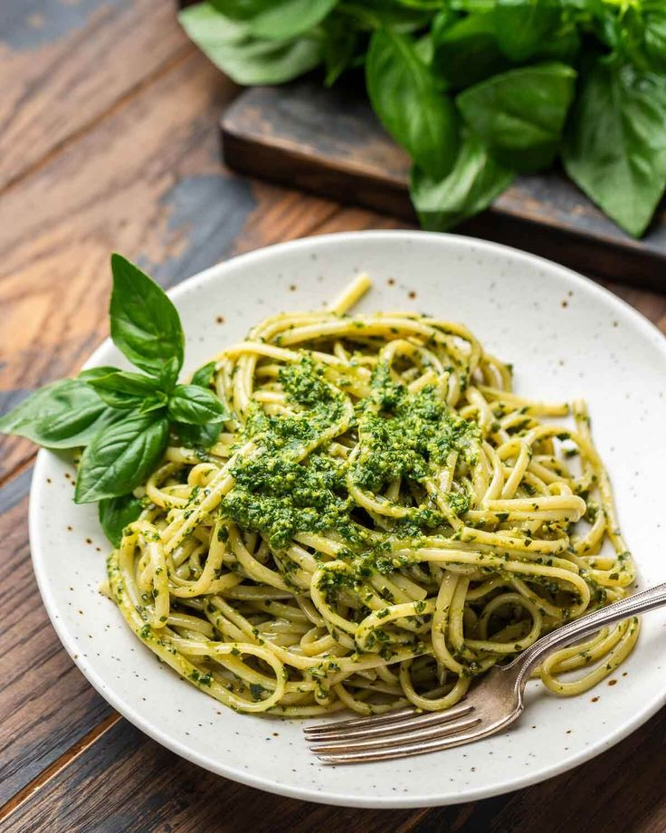

Pasta al Pesto Genovés
Una deliciosa combinación de albahaca fresca, piñones y queso parmesano que da lugar a una salsa verde y aromática.

Ingredientes
- 400 g de pasta (trofie o espaguetis)
- 2 tazas de hojas de albahaca fresca
- 2 dientes de ajo
- 50 g de piñones
- 100 g de queso parmesano rallado
- 100 ml de aceite de oliva virgen extra
- Sal al gusto
Preparación
- Triturar la albahaca, ajo y piñones en un mortero o procesador.
- Añadir el queso y mezclar bien.
- Incorporar el aceite poco a poco hasta obtener una salsa homogénea.
- Cocinar la pasta al dente y mezclar con el pesto.
- Servir con más queso rallado si se desea.
Volver al menu